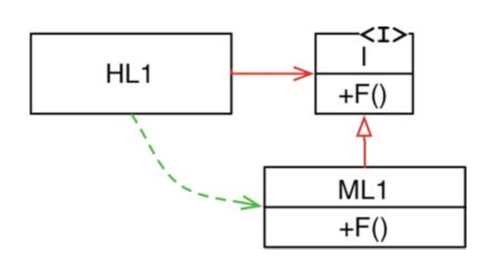

架构是什么？
The boxes on a PowerPoint diagram are not a software system’s architecture.
近来读了 Uncle Bob 的 《清晰架构》(Clean Architecture)，副标题叫『一个工匠的软件结构与设计指南』，自称为工匠的 Uncle Bob 全名叫 Robert C. Martin，是一位有 50 多年经验的软件工程师和作者。他是 SOLID 原则的命名者，同时也是《敏捷软件开发》、《代码整洁之道》的作者。《清晰架构》是 17 年出版的书也算是今年读的比较新的书了。全书分 35 章，近 400 页，虽说也不算特别多，不过啃下英文版也颇为吃力。本书听起来像是专业软件架构论述，其实更像是作者的杂谈，不少内容都可以在作者过去的博客找到。其中的软件开发哲学的故事让我很感兴趣。
那么什么是架构呢？作为一个常常把架构挂在嘴边的人，要给架构下个定义还真不容易。书中 Uncle Bob 给了一个很棒的定义：
软件架构是指，设计软件的人为软件赋予的形状，这个形状是指系统如何被划分为组件(Components)，各个组件如何排列（Arrangement），组件之间如何沟通（Communication）。
搞笑搞软工用了公司的组织架构来类比，我觉得非常形象：一个中型公司有董事会、董事长、董事会、总经理、部门、组等，以及各部门里面的员工，由此形成组织架构图。可以看出所有的架构一定有三个东西：
- 构成组织的单元，也就是不同职能的员工。
- 人员的安排，阶层式、扁平式、矩阵式，等等。
- 人员沟通的方式，直接沟通、透过部门主管或PM与其他部门或外部客户与厂商沟通、禁止沟通、圣上垂询才可开口等。
除了组织架构外，公司还有他的业务，业务与架构是决定一家公司的两个维度，两者看似正交，实际当我们看到一家公司的架构图，我们大概也能猜出一星半点公司的业务，法务部或行政部可能看不出什么，但移动开发部很明显喊着公司有着移动开发的业务（Screaming Architecture）。往往业务的发展会导致架构的演化，架构的演化反过来促进业务的发展。
软件系统也是同样的道理，软件有两个量（Value）：
- 软件的功能或行为，就是业务
- 软件的形状或设计，也就是所谓的架构
功能衡量系统能不能满足需求？架构意味着系统是否易于变化。功能架构孰重要？作者在书中用了控制变量法来说明这个问题，假设有两个系统：
- 一个系统能完全的满足需求但是不可变。
- 一个系统完全不可用，但是易于改变。
大部分人直觉上会选择那个马上就能跑起来的系统。但哪个系统更没用呢？第一个系统虽然能用，但是一旦需求变化了便不能用了，可能有点比较难想象，换句话说是修改系统的成本高于修改系统的收益，因为他非常难以更改。第二个系统虽然不能满足业务需要，但是它可以持续改善并最终变得有用。
若说架构比功能还有价值，又不合常理，一个精雕细琢的没有价值的软件，没有金主会为它埋单哪能诞生？除非是『软件艺术家』的自发行为。对一家软件公司来说，软件是其产品，产品要带来收益，所以功能仍是软件的第一价值，功能是软件能产生价值的部分。关系到我们的金主能不能赚到钱。架构退而次之是软件的第二价值，影响到软件的生命周期中的各种成本，间接地影响金主的收益。两者在软件不同的生命周期发挥着不同的作用，功能更多的是其紧急且重要部分，架构更多的是重要非紧急部分。
关于架构的意义：
为了能够最小化创建和维护软件的成本。
真实的软件开发是一个挣扎（Struggle）的过程，程序员会想着多快好省实现需求解决 Bug，产品会在软件的开发阶段多次变更需求，市场会卡着上线时间。倘若把功能是否实现作为标准，理性又短视的程序员会最小化自己的投入，只顾着实现软件的功能和应付变更，忽视任何架构方面的问题，一个不好的架构下各种混乱的依赖下的相互作用其维护成本可能是指数增长的，最终项目全变成意大利面条式的代码（Spaghetti code），挖坑的人可能已经换了一批又一批，而这些技术债务的主体并不是欠下债务的程序员，而是软件的所有人。一个本应为公司带来技术积累的项目，反而成为公司的历史包袱。
可能有勇士在某个时间点（维护成本不断增加直到高于重构成本的那个拐点）会提出重构可以解决问题。但重构只是可以解决一部分问题，可能还会引入新的问题。对于这种情况，作者这样说：如果最后才考虑架构，那么系统的开发成本会更高，并且最终几乎不可能成为系统的一部分。如果允许这种情况发生，则意味着软件开发团队没有做足够的努力。我们站在 PM 的角度看，他只关心需求，他们不懂也没有能力评估架构的重要性，因为这对他们来说是无关的细节。所以架构师必须要责任去强调架构的重要性，在开发过程中争取足够的时间进行架构设计。
有一点是确定，架构设计和单元测试确实会使项目的开发变慢，而债务也不一定是坏事，在一些时间点欠点技术债是可以获得更好的投资回报率。这一点在现实生活中可以找到很多应用，比如贷款买房，炒股加杠杆。在资源有限的情况下，功能和设计确实是一对矛盾，架构师的职责换一种表述就是利用其专业知识为功能和设计分配资源以获得最佳的回报率。
对于架构师的职责作者这样说，设计良好的架构，使系统易于理解、开发、维护和部署。最终目标是最大限度地降低系统的生命周期成本并最大限度地提高程序员的生产力。
架构设计之道
Change is the only constant.
如果说软件开发中有不变的真理，那就是变化不可避免。为了应付变化。软件工程师总结出许多原则，比如封装变化，针对接口编程，依赖抽象，最少知识原则等等。
记得很久以前开始思考软件的设计的时候，最常犯的错误就是，为了减少代码量而设计，特别是滥用继承，导致代码僵化重构后面对变化更加痛苦，如果当时了解了种种原则，生活肯定容易许多。
本书用了三分之一的篇幅来讲这些原则。包括用于指导如何设计类的 SOLID 原则，和指导如何设计组件的六个原则。这里类不单单是面向对象的概念，而是更加泛化地指一组函数和数据，也称为模块（module）。 而组件指的是，指的是独立的可部署单元，是模块的集合。比如 java 中的 jar，ruby 的 gem。
SOLID 原则指导类的设计应该容忍变化、易于理解。组件原则指导组件的内聚和组件间的耦合，其实也是 java 的分包原则。
组件内聚：
- 重用发布等价原则（Release/Reuse Equivalency Principle）
- 共同封闭原则（Common Closure Principle）
- 共同重用原则（Common Reuse Principle）
组件耦合：
- 无环依赖原则 ADP（Acycle Dependencies Principle）
- 稳定依赖原则 SDP（Stable Dependencies Principle）
- 稳定抽象原则 SAP（Stable Abstractions Principle）
篇幅所限就不进行解释了，作者还介绍了两个度量组件稳定性和抽象性的量：
- 不稳定性：\(I = F_{out}/(F_{in}+F_{out})\)，\(F_{in}\) 传入依赖；\(F_{out}\) 传出依赖。依赖关系应该，高 I 值依赖低 I 值。
- 抽象性：\(A = N_a/N_c\)，\(N_c\) 类的数目；\(N_a\) 抽象类或接口的数目。
作者还聊了编程范式的发展，他的观点也挺有意思：编程的发展，是一个添加限制的过程。三种范式都从我们身上夺走了一些东西。每一种都限制了我们编写代码的方式。
- 结构化编程，对直接控制转移进行了限制
- 面向对象编程，对间接控制转移进行了控制
- 函数式编程，对变量分配进行了限制
面向对象最核心的就是增强了多态，引入多态后，高级函数依赖于低级函数的接口，而不是具体实现。把对具体实现的依赖分离出来。低级的实现，可以被独立部署更替。这就是依赖反转。对架构师来说提供了使用多态性来获得对系统中每个源代码依赖关系的绝对控制的能力。
另外，Dijkstra 《Go To Statement Considered Harmful》的故事也值得了解一下。
清晰架构
Every problem in computer science can be solved with a layer of indirection (besides the problem of too many layers of indirection)
清晰架构，在 2011 年作者的博客就有提到这个名词 Clean Architecture，另一篇引用比较多的博文 The Clean Architecture 写于 12 年，内容所讲的就是本书的清晰架构。
所以，清晰架构不是什么新东西，他是六边形架构(Hexagonal Architecture)的一个变体，基于以往多种架构的发展和归纳，提出来的一个新架构模型。
传统的分层架构是垂直形式的层次架构，清晰架构是由外往内的圆环状层次架构：

这样架构有几个特点：
- 一个核心
- 抽象性往内递增
- 外层依赖内层
- 层与层之间通过接口与适配器进行交流
- 框架、数据库、UI 等都是细节
核心的实体指的就是领域内的关键业务逻辑，最不可能发生变化的部分，比如苹果总是往下掉；保险总有承保人、投保人、被保险人、受益人；还贷的等额本息、等额本金算法。关键业务逻辑应该是系统中最独立和可重用的代码。
第二层是用例，用例是应用程序的业务逻辑。用例关注与输入数据并产生输出数据，但用例对象不应去关心数据如何传递给用户或其他任何组件。
接着是接口适配层，将实体和用例转化为更适用外层使用的形式。将外部数据转化为用例或实体使用的内部形式。这一层最强大的工具就是依赖倒置，以 MVP 为例，更新界面的时候，控制流的方向 Presenter -> UI，而依赖关系却是 UI 依赖于 Presenter 层（实现了 Presenter 层相应的 View 接口）

UI 在外层这个理所当然了，名字本身就说明了它直接和用户打交道，而且 UI 是掌控在设计和产品手里，越不能控制的东西越要小心其变化。
传统的分层结构，数据库总是处于最底层，但其中数据才是关键，数据库不是。关系型数据库只不过是把数据按 b+ 树这样的结构存储起来，然后通过 SQL 来操作数据。我们也可以使用文件存储数据，甚至可以脱离硬盘直接在内存里面用数组、链表、树、图等数据结构组织我们的数据，毕竟内存价格越来越便宜了（五年一个取样，就可以无视近几年 PC 内存的涨幅了😆）。其中关键的点就是推迟决定，我们很难在初期对我们的数据使用场景做个准确的预测，数据库作为细节隔离在核心系统外，以后因为性能规模等等问题变动数据库更加容易。
但框架呢？框架总是鼓励我们和应用程序紧密的耦合在一起，它提供一种模式，只要我们服从这个模式就能获得极大的便利，代价就是这个框架和我们应用的各个层次紧密地耦合在一起。这有什么风险？其一，框架也许可以帮助您完成应用程序的一些早期功能。 但是随着产品的成熟，它可能会超出框架的功能。其二，框架可能会朝着你没有帮助的方向发展，你甚至可能会发现 API 消失、改变了，因为控制权在作者而不是在你手上。其三就是总有新框架出来，你可能希望切换到更新更好的框架。
最近一个朋友维护老项目遇到一个 android-async-http 的问题向我求助，android-async-http！！！这个不是我一开始做 Android 项目用的网络库吗？起码也是 11、12 年的事了。虽然是个不错的库但也不维护几年了吧。遇到底层的 Bug 别提有多棘手了，而且维护的价值已不大，投入太多时间又觉得亏，最终只能用一些额外的措施把它掩盖过去。
但分离框架，谈何容易呢。这几年写的 App，数据层也从手写 Dao 到 greenDao 到 DBFlow 再到现在的 Room。Room 虽然有官方加持，但以谷歌的尿性被弃用也是随时的事。如果引入 Room，最内层的 Entity 就得使用 Room 的注解便会对 Room 的依赖。如果要分离呢，就需要在数据层也定义一套 Entity，层层之间的数据传递还需要做转换，把核心的 Entity 转换为数据层的 Entity，这样做就很清晰架构了1，但是有必要吗？
架构的矛盾在于，我们不应该预见抽象的必要性。知道 YAGNI（You aren’t gonna need it）吗？这是个饱含智慧的理念：“你不需要它。”。因为过度工程往往比不够工程化更糟糕。典型的移动应用程序与典型的企业应用程序有很大不同。它要小得多，并且通常需要快速交付。记住架构是演化的，不能简单地在项目的开始时决定实施哪些边界以及忽略哪些边界。相反，随着系统的发展，边界会慢慢变的清晰，你会关注到它，再权衡实施和忽略的成本，在实施成本低于忽略成本的拐点时做出决定。
不能手里有个锤子看到什么都是钉子。就像当初学设计模式一样，学了之后又要让你忘掉它。
-
Android-CleanArchitecture 就是这样的设计，但在 Kotlin 版已经不用了。 ↩